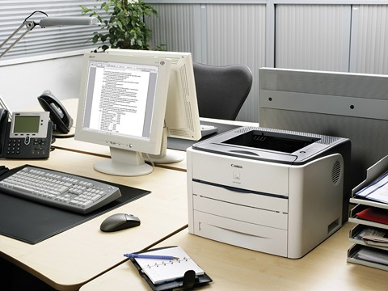
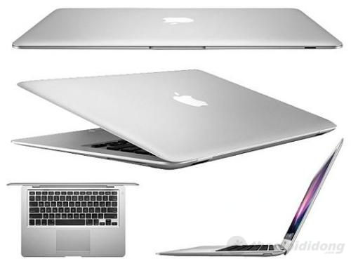
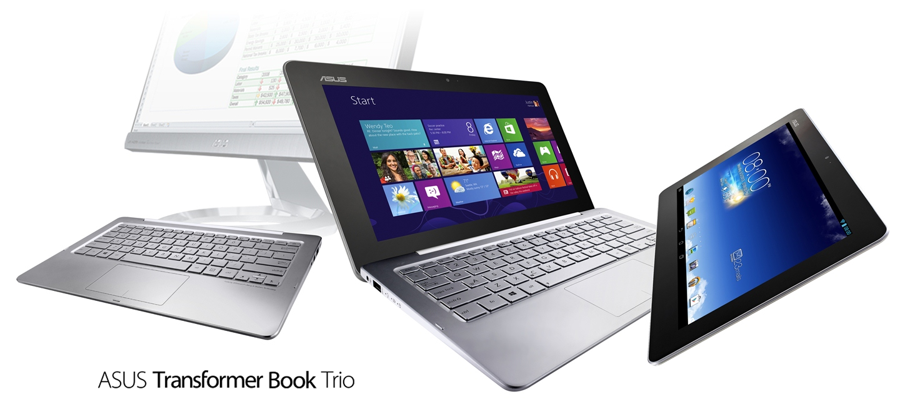
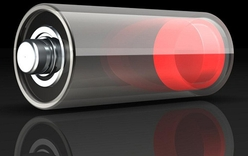
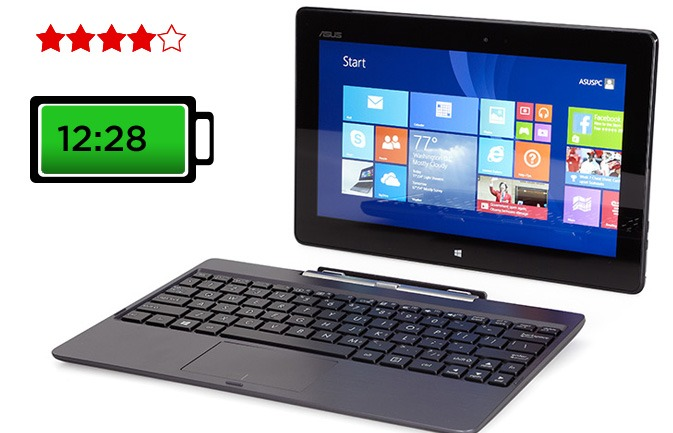

Sự phát triển của các thiết bị điện toán di động:
Với sự thúc đẩy mạnh mẽ của khoa học kĩ thuật, công nghệ thực sự đã và đang xâm nhập sâu vào bất cứ lĩnh vực nào trong xã hội. Chiếc máy tính gần như đang trở thành vật bất li thân cho công việc mọi người. Bạn có thể về nhà, làm phần công viêc đang còn dang dở trên công ti như hoàn thành bản thiết kế chưa xong, bạn phải vác chiếc máy tính để bàn cồng kềnh từ văn phòng về nhà, từ nhà đến nơi gặp đối tác? Chính vì những nhu cầu cần thiết đó, các thiết bị điện toán di động như máy tính xách tay, máy tính bảng trở thành cứu cánh rất phù hợp. Nhiều công ti lớn đang thu về nguồn lợi khổng lồ từ ngành công nghiệp sản xuất thiết bị điện toán di động như Apple, Sony, Toshiba, Dell,... Ta cùng tìm hiểu một số lợi thế làm nên sức mạnh của các thiết bị điện toán di động:

Hình 15: Vấn đề thật nan giải với một chiếc máy kồng kềnh?
Nhỏ gọn: đây chính là lợi thế lớn nhất mà các thiết bị điện toán di động sở hữu.

Tích hợp: việc nhiều thiết bị cần thiết được tích hợp trong cùng một thiết bị điện toán còn làm nên thế mạnh cho các máy điện toán di động.

Pin: với việc có thể hoạt động bằng pin khiến cho thiết bị điện toán di đông như laptop, macs,.. không còn quá phụ thuộc vào nguồn điện trực tiếp cắm vào nó. Đặt biệt, trong những năm gần đây, với việc ngày càng cải thiện thời gian của pin, các thiết bị điện toán di động càng được ưu tiên hơn.

